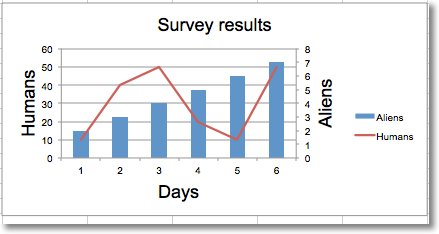

Adding a second axis¶
Adding a second axis actually involves creating a second chart that shares a common x-axis with the first chart but has a separate y-axis.
from openpyxl import Workbook
from openpyxl.chart import (
LineChart,
BarChart,
Reference,
Series,
)
wb = Workbook()
ws = wb.active
rows = [
['Aliens', 2, 3, 4, 5, 6, 7],
['Humans', 10, 40, 50, 20, 10, 50],
]
for row in rows:
ws.append(row)
c1 = BarChart()
v1 = Reference(ws, min_col=1, min_row=1, max_col=7)
c1.add_data(v1, titles_from_data=True, from_rows=True)
c1.x_axis.title = 'Days'
c1.y_axis.title = 'Aliens'
c1.y_axis.majorGridlines = None
c1.title = 'Survey results'
# Create a second chart
c2 = LineChart()
v2 = Reference(ws, min_col=1, min_row=2, max_col=7)
c2.add_data(v2, titles_from_data=True, from_rows=True)
c2.y_axis.axId = 200
c2.y_axis.title = "Humans"
# Display y-axis of the second chart on the right by setting it to cross the x-axis at its maximum
c1.y_axis.crosses = "max"
c1 += c2
ws.add_chart(c1, "D4")
wb.save("secondary.xlsx")
This produces a combined line and bar chart looking something like this:
